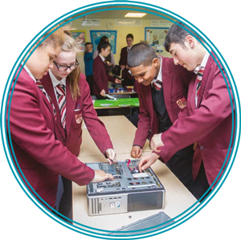

LGfL History Of Computing Resources and Activities
- How Computers Work
- How the Internet Works
- How to Build a computer
- Dataflow in computers
LGfL History Of Computing Resources and Activities
- Input, output and processes
- Storage of information
- How we Interact
- Dataflow in computers
- Computer Processes
BBC Bitesize resources
- Hardware and Software
- Data Representation
Computer systems
Understand the hardware and software components that make up computer systems, and how they communicate with one another and with other systems 
Computer systems are made up of hardware and software. Hardware includes the physical components of the computer such as memory, graphics cards, display screens and disk drives. Software involves the computer programs that run on the hardware, including operating systems and application programs such as word processors and games.
Computers function as input, process and output systems. Data is input, computation is performed and an output response is given. For example, when you type in your username and password, they are checked against stored values, and the output is either a failure or success message. Pupils should be aware of a range of input and output devices, what they are used for and, at a very basic level, how they provide an interface between the rich, analogue real world and the digital domain of the computer.
Computers are often connected through local networks and the biggest network of them all, the Internet. The Internet is a network of networks, where data of all types is exchanged between computers across wired and wireless connections. Connected computers, including smart hardware such as routers and switches, have numeric IP (Internet protocol) addresses, which are used to identify where to send data items and where they have come from. The data items are packaged up into regular-sized chunks known as packets, each of which contains information about where it came from and where it is going. A single message may be made up of many packets, which may or may not take the same route through the network.
The World Wide Web is not the Internet. It is a collection of linked data files. These are transmitted across the Internet and appear as web pages. The language that defines the contents of a web page is called HTML. Email and voice conversations are other types of data sent across the Internet. Networking can be explored through role-play, with pupils acting out the functions of the Internet and how data is sent across it.
